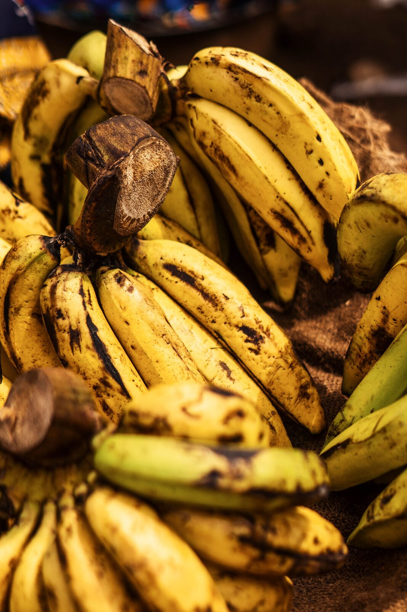

THE LEFTOVER RESCUE ARCADE
SDG 12RESPONSIBLE
CONSUMPTION
AND PRODUCTION
CONSUMPTION
AND PRODUCTION
MISSION 1 OF 4
RESCUE POINTS: 0
Save it before it expires.
Choose the best rescue move for each leftover. Every smart choice keeps food out of the bin and saves the resources used to produce it.

Mission 1: Rescue the Ripe Bananas
These bananas have brown spots but smell fine. What should you do?
What does SDG 12 mean?
SDG 12 is the United Nations Sustainable Development Goal for responsible consumption and production. Target 12.3 calls for food waste at retail and consumer levels to be cut in half by 2030.
Photo credits
- Banana photo via Pexels photo 27924819; photographer name was not supplied with the image link.
- Bread photo by STAFFAGE via Pexels photo 6195.
- Rice photo by Robert Moutongoh via Pexels.
- Carrot photo by Nick Collins via Pexels.
Sources: United Nations SDG 12 and the United Nations Environment Programme Food Waste Index Report 2024.